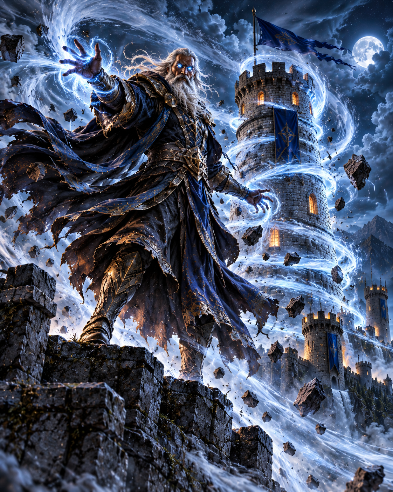
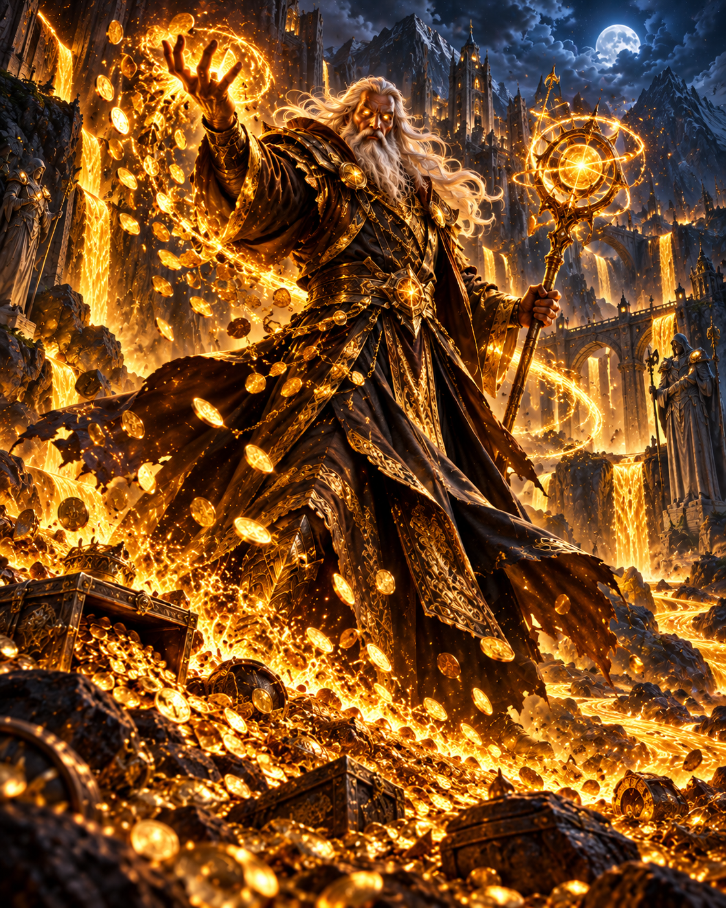
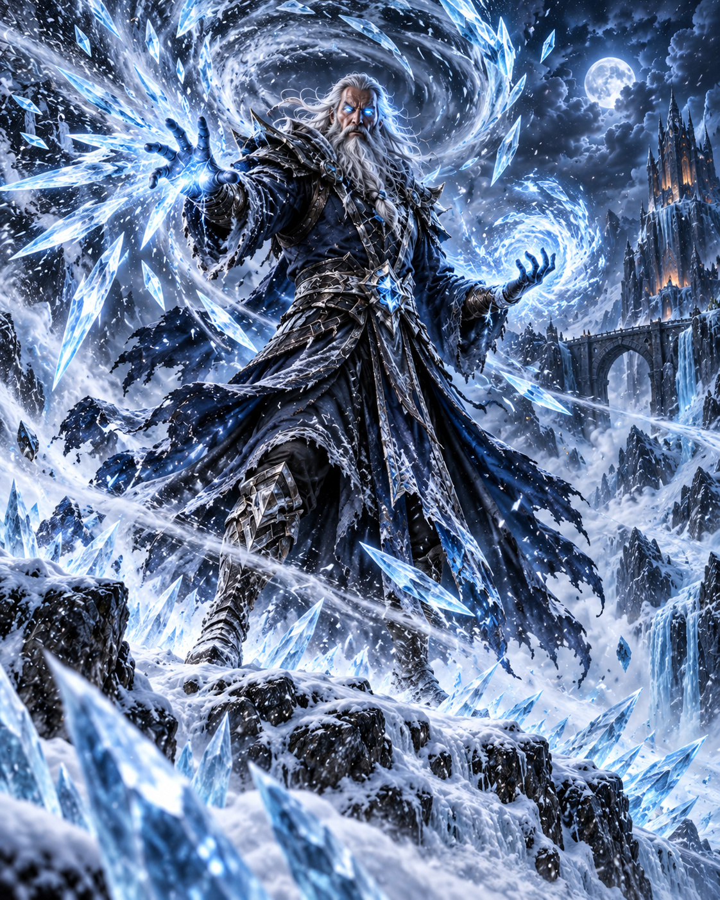

Guardian of the Last Light,
Hearken to this final plea, for fate has cast its die upon these sacred lands. I speak to you from the shadows of the High Temple, for we are in dire need of assistance.
The earth has hemorrhaged open, and from the Fiery Depths of the Abyssal Veins, an unholy heat rises. These molten gateways have sundered our soil, and now the roots of existence tremble beneath the demon march.
The sky turns to soot, and the sap of our Trees of Life boils in the veins of the earth. The realm stands upon the precipice of ruin; if the heartwood burns, all memory of our kin will be reduced to ash.
To ensure your defense holds firm, our Elder Mages have infused every quiver with ancient enchantments. These arrows are now bound to the very breath of the foe—curving their flight to relentlessly stalk every invader until their mark is found. Let the winds themselves guide your hand.
You must take up the mantle of Guardian. There is no time for hesitation. Fortify the paths lest we be overrun by the scorched legions of the pit.
Let the stone of your bastions stand against their flame. For the world, for the light, for survival.
Written in the soot of the falling realm,
— The High Elven Council
Guardian, I walked where no elf has walked - down into the Abyssal Veins, where the demons are born. There I took their enchanted magma, still screaming with the fury of the pit, and forged it into a spell of my own.
Point me to the road they march upon, and I shall turn it to molten stone beneath their feet. Let them taste the very fire they brought upon our lands - and let it burn them, again and again, for as long as my flame holds.

Guardian, for a hundred winters the winds have been my only company atop the last watchtower. It was my breath that enchanted your quivers, so that no arrow of yours would ever lose its mark.
Call upon me when the horde grows thick, and I will unleash the gale upon every bastion you hold. Your arrows shall fly faster and bite deeper than any mortal bow allows. But heed me - the storm is fickle, and it never stays for long.

Guardian, a war is won with gold as surely as with steel - towers do not raise themselves. I have learned the oldest secret of my craft: to draw coin from what the fallen leave behind.
Speak my charm before the next wave breaks, and every demon you slay shall pay twice the toll for its trespass. Spend it wisely, for my alchemy is slow to brew again.

Guardian, I come from the frozen peaks of the north, where no fire has ever burned. The pit's legions are made of flame - and flame fears only one thing.
Mark the road, and I will bury it beneath a storm of ice. Their burning march will slow to a crawl, and their molten hides will grow so brittle that every blow cuts deeper - be it arrow or lava.
Thus speak the Elder Mages.
Go now, Guardian - the Trees of Life are waiting.